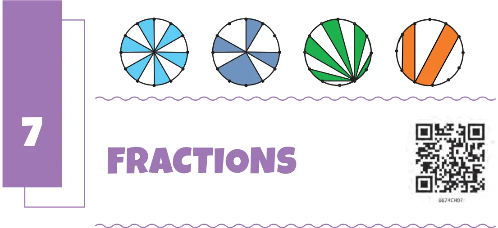
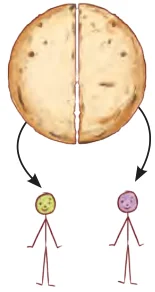
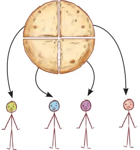
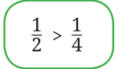

Recall that when some whole number of things are shared equally among some number of people, fractions tell us how much each share is. Shabnam: Do you remember, if one roti is divided equally
between two children, how much roti will each child get?

Mukta: Each child will get half a roti. Shabnam: The fraction ‘one half’ is written as
\(\frac{1}{2}\) . We also sometimes read this as ‘one upon two.’
Mukta: If one roti is equally shared among
4 children, how much roti will one child get? Shabnam: Each child’s share is \(\frac{1}{4}\) roti. Mukta: And which is more \(\frac{1}{2}\) roti or \(\frac{1}{4}\) roti? Shabnam: When 2 children share 1 roti equally, each child gets \(\frac{1}{2}\) roti. When 4 children share 1 roti equally, each child gets \(\frac{1}{4}\) roti. Since, in the second group more children share the

same one roti, each child gets a smaller share. So, \(\frac{1}{2}\) roti is more than \(\frac{1}{4}\) roti.
